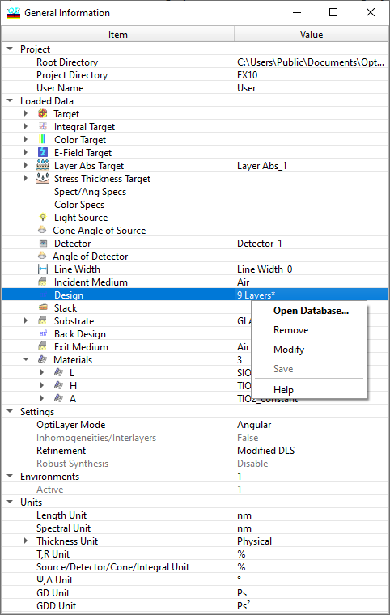

Right Mouse Button Popup Menus
Right Mouse Button Popup Menus
In numerous instances, right-clicking the mouse button triggers a popup menu that offers quick access to commonly used tools in OptiLayer. The selection of tools in this menu can vary depending on where within the program the user initiates it. Detailed descriptions of popup menu contents can be located in Help topics associated with specific dialog windows. Additionally, in graphic windows, these popup menus contain Configuration settings tailored for adjusting the graphical display (refer to Configuration Settings).
In certain instances, such as in graphical windows and the Target Editing spreadsheet, popup menus enable users to swiftly switch between Spectral and Angular Modes.
In other scenarios, various useful options are accessible. For instance, in the Needle Optimization Window, the popup menu enables users to execute procedures such as the Needle procedure and the Refinement procedure.
The popup menu in the General Information window provides quick access to numerous highly useful functions for controlling OptiLayer states and modes.
